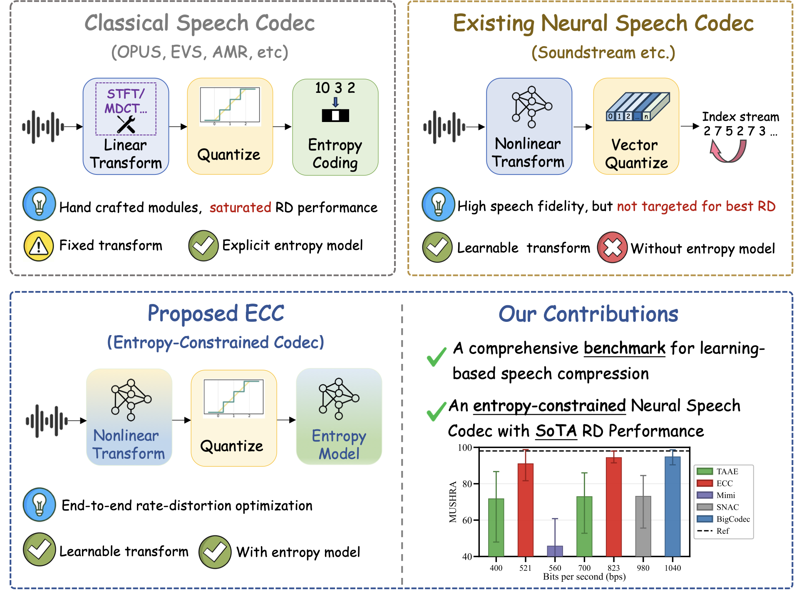
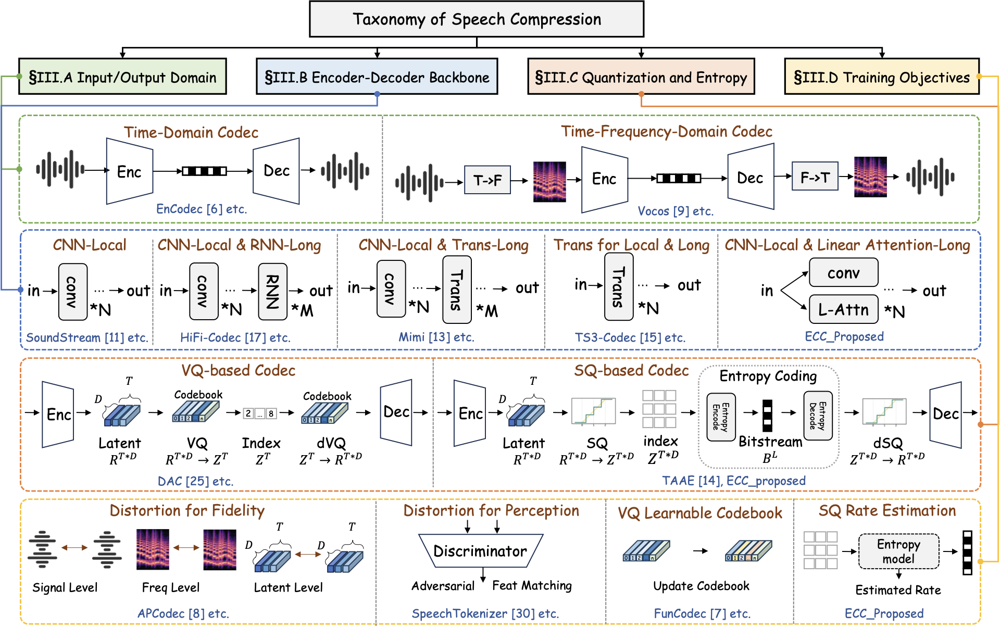
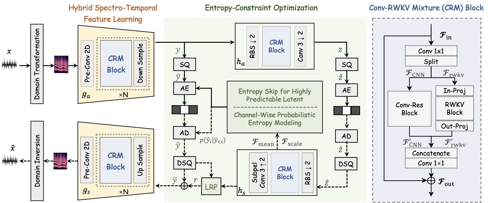
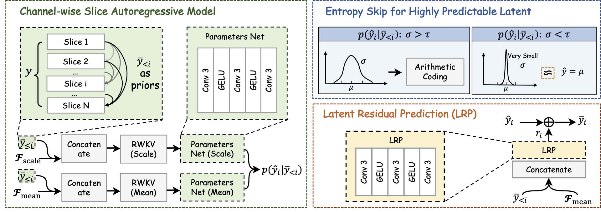
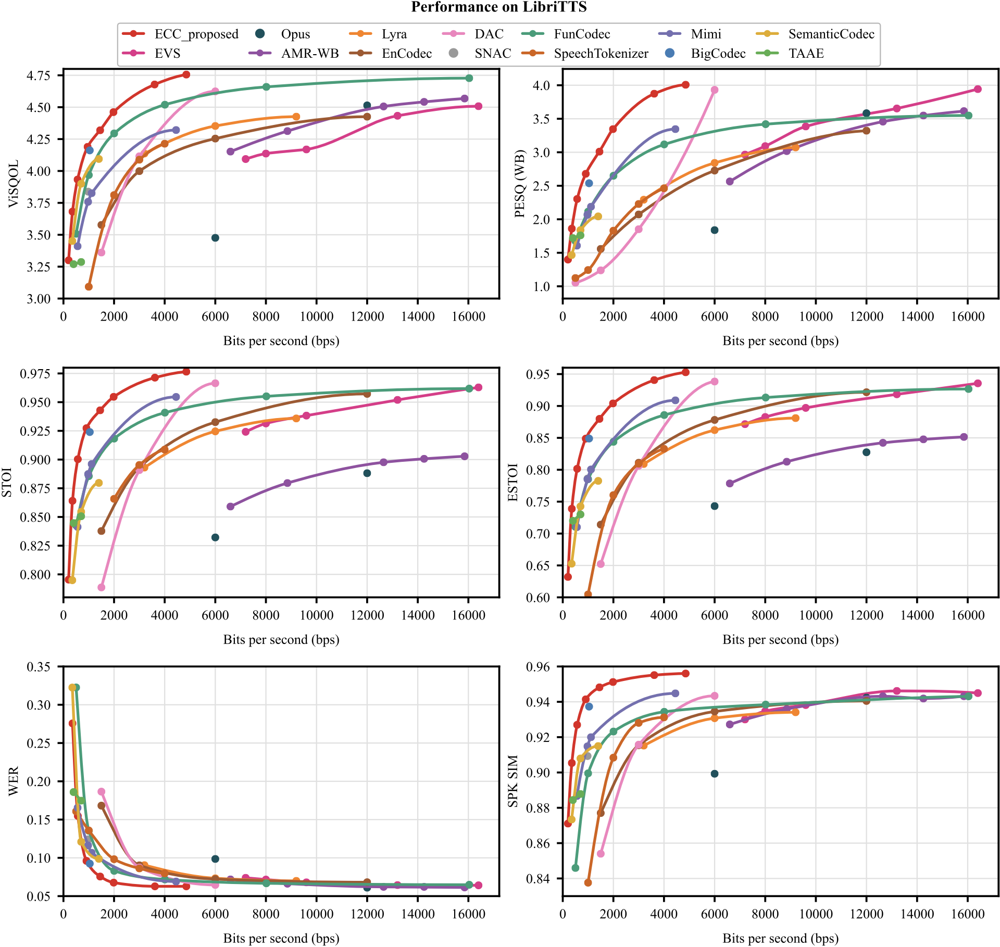
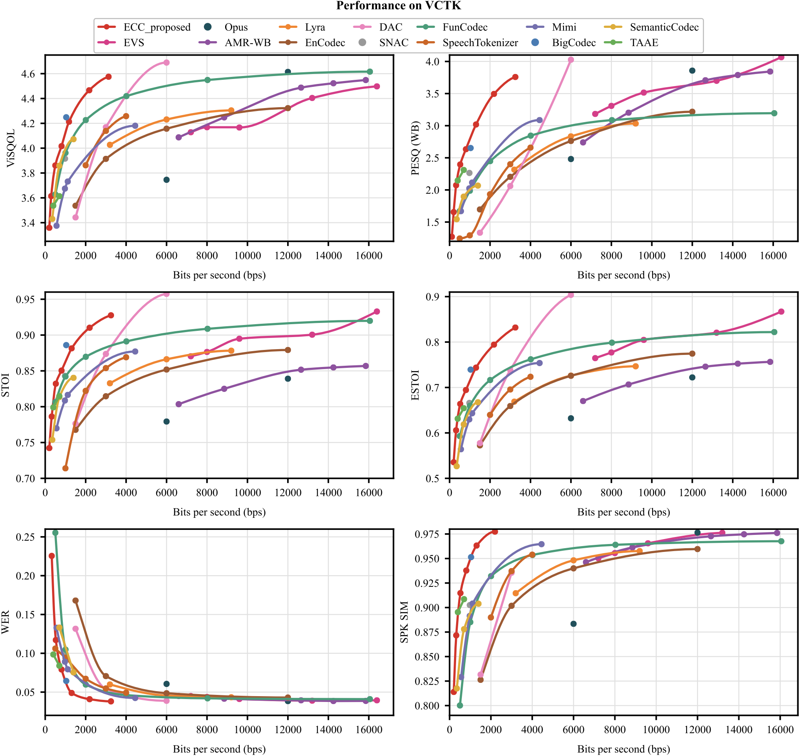
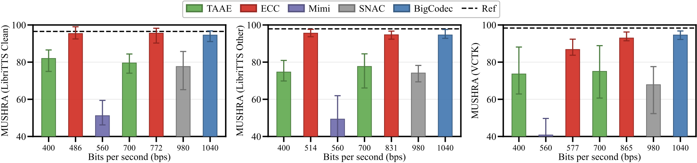

Abstract
Learning-based speech compression has achieved promising low-bitrate performance, but many neural speech codecs still describe quantized latents with preset-rate discrete symbols or apply entropy coding only after symbol generation. Such designs decouple representation learning from probability modeling, limiting their ability to exploit the non-uniform usage and temporal dependencies of learned speech latents. In this paper, we study neural speech compression from an entropy-constrained coding perspective. We first formulate a unified learning-based speech coding pipeline and provide a benchmark-style analysis of recent neural speech codecs, showing that explicit probability modeling remains underexplored in learned speech compression. We then propose ECC, an Entropy-Constrained Codec that combines scalar quantization with a learned entropy model. ECC integrates hyperprior-based side information, channel-wise context modeling, latent residual prediction, and lightweight temporal modeling to estimate latent likelihoods for rate estimation during training and arithmetic coding during inference. To further improve low-bitrate efficiency, ECC introduces entropy skip, which omits highly predictable residual symbols using decoder-available scale estimates without transmitting additional skip masks. Extensive experiments show that ECC achieves a favorable low-bitrate rate--distortion trade-off over conventional and neural codec baselines, while ablation and diagnostic studies validate the effectiveness of entropy modeling and entropy skip.
Keywords: Speech Compression, Neural Speech Codec, Entropy Model, Linear Attention
Overview

Figures






Audio Samples
Comparison of proposed method (ECC) with other methods across four datasets.